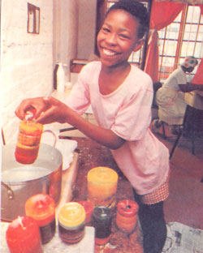
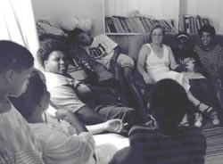
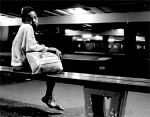

|
|

خانه ای که می خندد؛ پناهگاه دختران فراری در کیپ تاون- آفریقای جنوبی
لیلا راد
دو شنبه4 مرداد 1389
یکی از خیابان های آرام کیپ تاون است. اطراف آن با درختان پوشیده شده از یک طرف به هتل چند ستاره ای می رسد و از طرف دیگر به بازار آفریقایی. یک ایستگاه پلیس همین نزدیکی هاست. خیابان را که بروید، تصویر کوچکی از یک خانه ی خندان در بین چند آسمان خراش چسبیده است به دیوار نزدیک یک در آهنی کوچک. اینجا، "خانه ی ما" ست.

چرا فرار
کیپ تاون دومین شهر پرجمعیت آفریقای جنوبی و وسیع ترین آن است. در این شهر سالانه 150 دختر بین 6 تا 18 ساله به دنبال پیدا کردن زندگی بهتر خانه هایشان را ترک می کنند. آماری که سالانه رو به افزایش است. بسیاری از این دختران قربانی خشونت های خانگی و بی توجهی والدین شان هستند و بقیه را خانواده ها بیرون می کنند چرا که توانایی حمایت از آن ها را ندارند. آن ها می گویند: در خیابان بهتر از خانه غذا می خورند. دختران فراری تعداد کمتری را نسبت به پسران در خیابان تشکیل می دهند. به همین دلیل از همان موقعیت فرودست خانه برخوردارند. اغلب در نظر گرفته نمی شوند و یا کمک های آذوقه ای تهیه شده برای کودکان خیابان توسط برخی سازمان ها شامل حالشان نمی شود.
خانه ی من کجاست؟
در سال 1988 اولین پناهگاه برای دختران خیابان در کیپ تاون تاسیس شد. و حالا و بعد از گذشت 20 سال همچنان تنها پناهگاه برای دخترانی است که از خانه می گریزند." خانه ی ما" اسم این پناهگاه است.

خانه ی کوچک دو طبقه ایست با حیاطی کوچک تر در یکی از خیابان های نه چندان شلوغ شهر. طبقه ی اول سه اتاق است و آشپزخانه. اتاق کوچک تر متعلق به دو نفر از سرپرستان است. اتاق بعدی کلاس درس است و دیگری نشیمن. با یک کاناپه و تلویزیون. اتاق ها و آشپزخانه اطراف راهروی باریکی هستند که به طبقه ی بالا می رود. طبقه ی بالا همه جا تختخواب است. توی اتاق ها و حتی راهرو. و 16 کمد به ازای هر تخت.دخترها شش نفر شش نفر در 2 اتاق می خوابند و 4 نفر در راهرو. این تعدادِ در نظر گرفته شده است. با اینحال گاهی تا 25 دختر در همین فضا می خوابند. اتاق کوچک دیگری هست با یک میز و چند صندلی که دفتر کار است. روی دیوار همه پر از عکس و نقاشی و نامه است.
دخترها نمی توانند تخت هایشان را انتخاب کنند و یا اینکه پیش دوستانشان بخوابند. سرپرست ها دلیل آن را ایجاد نزدیکی بین همه عنوان می کنند. ساعت 5 صبح بیدار باش است. حمام اجباری است. دخترها باید زود بیدار شوند تا بعد از آماده شدن و صبحانه، ساعت 7 آماده ی شروع کلاس باشند. شب ها محدودیتی برای خواب نیست. دخترها و سرپرست ها تا دیروقت در نشیمن می نشینند و تلویزیون می بینند یا صحبت می کنند. تهیه ی غذا، نظافت و خرید به عهده ی دخترهاست و وظایف بین همه می گردد. سرپرستان می گویند" ما آنقدر زندگی راحتی فراهم نمی کنیم که دختران هرگز نخواهند که به خانه برگردند."
مددکاران اجتماعی در خیابان دختران را پیدا می کنند. با آن ها صحبت می کنند و از آن ها می خواهند تا به خانه بیایند. بعضی ها خودشان خبردار می شوند و مراجعه می کنند. تعداد کمی بعد از چند روز فرار می کنند. اکثریت می مانند.
هدف این پناهگاه توانا کردن دختران برای مقابله با مشکلات زندگی و باز پس فرستادنشان نزد خانواده هایشان است. برخی که تازه مدرسه را ترک کرده اند دوباره به مدرسه فرستاده می شوند و بقیه که سال هاست در خیابان هستند در کلاس آموزشی پناهگاه شرکت می کنند. تنها معلم کلاس باید به همه ی دخترها رسیدگی کند و متناسب با سطح هرکدام، آن ها را آموزش دهد. این آموزش ها همیاری در گروه، دوستی، رابطه ی جنسی سالم و اهمیت سلامتی را نیز شامل می شود.
در طول این مدت، مددکاران و سرپرستان به تحقیق پیرامون شرایط خانوادگی هر تازه وارد می پردازند. بعضی وقت ها والدین دختر فراری آزار دیده به دنبالش می آیند. پناهگاه با استفاده از قوانین موجود درباره ی حمایت از کودک می تواند مانع از تحویل وی شود.
اما به طور متوسط دختران زیاد در اینجا نمی مانند. بین یک تا دو ماه.
بازگشت
این پناهگاه، خانه ی دیگری دارد در محلی دیگر. اسم خانه ی جدید "سی وی وه" siviweبه معنی : خدا صدای ما را می شنود، است. این اسم با پیشنهاد خود دختران انتخاب شده است و مرحله ی دوم نگهداری از آنان است.
دختران پس از اینکه به شرایط زندگی در پناهگاه عادت کردند و آموزش های اولیه را دیدند آماده ی فرستادن به سی وی وه می شوند. اینجا خانه ی بزرگتری است و شرایط راحت تری دارد. در اینجا دختران با تمرکز بیشتری به برنامه ریزی برای زندگیشان می رسند. مددکاران و مسئولان در این خانه به دوباره ارتباط گیری با خانواده ها کمک می کنند و بر تمام مراحل آن نظارت دارند. برای این منظور کلاس های مشاوره برای خانواده ها وجود دارد.

بعضی از آن ها بعد از چند سال نزد خانواده هایشان برمی گردند. بعضی مورد سرپرستی سایر خانواده ها قرار می گیرند و بعضی به دنبال ساختن زندگی مستقل خود، آنجا را ترک می کنند. با اینحال پس از رفتن از خانه هم ارتباط همچنان حفظ می شود. آن هایی که نزد خانواده هایشان می روند به طور مرتب توسط مددکاران بازدید می شوند تا از شرایط شان اطمینان حاصل شود. بقیه خود نامه می نویسند.
یک جای امن
قبل از به وجود آمدن یک پناهگاه، دختران به طور متوسط سه سال را در خیابان می گذراندند. درحالیکه بسیاری از این دختران حالا به پناهگاه مراجعه می کنند. آمار سال 2000 نشان می داد که از جمعیت کودکان خیابان در کیپ تاون، تنها هفت نفر دختر بودند. که چهار نفر از آن ها قبلا به پناهگاه مراجعه کرده و دوباره به خیابان برگشته بودند.
تعدادی دیگر از دختران هستند که در خیابان اما همراه با گروه های خانوادگی زندگی می کنند. مددکاران از این دختران می گذرند مگر اینکه موردی از خشونت یا غفلت مشاهده یا گزارش شود. در این صورت آن ها می توانند به پناهگاه مراجعه کنند.
یک خانه ی کوچک خندان، خانه ی همه ی دخترانی است که دنبال یک جای امن به خیابان ها گریخته اند.
*برای تماس با نویسنده ی مطلب می توانید برای این آدرس ایمیل بفرستید:leila.raad@gmail.com
** عکس ها از سایت http://onsplek.org.za